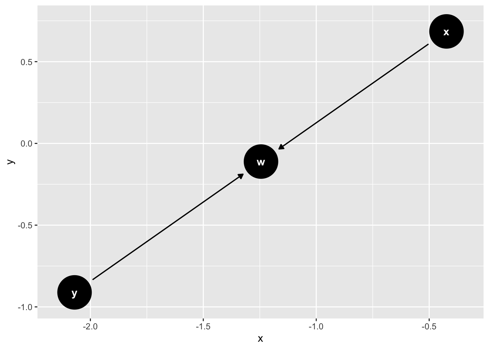
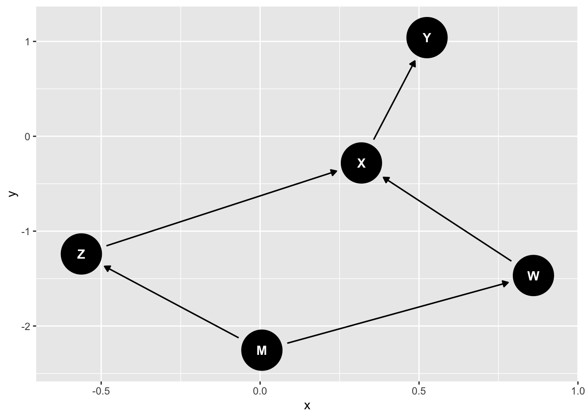

Capítulo 3 DAGs

3.2 Introdução
Uma das principais abordagens para fazer inferência causal utiliza diagramas causais chamados de Directed Acyclic Graphs (DAG). Ela foi desenvolvida na ciência da computação entre os anos 80 e 90 e é associada com o trabalho pioneiro de Judea Pearl. Veja o livro The Book of Why para uma história de como surgiu essa abordagem.
Abaixo temos um exemplo simples de um DAG:
Eles são chamados de DAGs porque os gráficos são direcionados (apontam em uma direção), acyclic porque não permitem ciclos (isto é, se A causa B, B não pode causar A) e graphs porque, como você pode imaginar, são grafos.
No exemplo acima, o DAG é formado por três variáveis {y, x, z} que são, em geral, variáveis aleatórias. E as flechas indicam direção de causalidade. Ou seja, \(x\) causa \(y\) e \(z\) causa \(y\). É importante saber que DAGs são não paramétricos. Eles podem ser interpretados como: \(y = f(x, z)\). Ou seja, qualquer função de x e z são igualmente possíveis. Eis alguns exemplos compatíveis com o DAG acima:
- \(y = x + z\)
- \(y = 10 + x + z + x*z\)
- \(y = 3*x^z\)
- \(y = \pi*z/x + x^2 + 1/(z^3)\)
A razão porque não escrevemos DAGs como equações é porque \(y = f(x, z)\) não expressa adequadamente a relação de causalidade pois, em matemática, é indiferente escrever \(f(x, z) = y\) ou \(y = f(z, x)\). Porém, dizer que \(x\) e \(z\) causam \(y\) é muito diferente de dizer que \(y\) causa \(x\) e \(z\). E com o DAG as flechas indicam a direção da causalidade.
3.3 Os Tipos Básicos de DAGs
3.3.1 1. Chains
Em uma chain, \(x\) causa \(w\) que, por sua vez, causa \(y\). Aqui, \(w\) pode ser considerado o mediador do efeito de \(x\) sobre \(y\).
Exemplo: O desempenho econômico de um país pode aumentar a popularidade do presidente, o que leva a mais votos.
Representação:
3.3.2 2. Forks
Em um fork, uma variável \(w\) causa ambos \(x\) e \(y\). Dessa forma, \(w\) é uma causa comum que pode gerar correlação espúria entre \(x\) e \(y\).
Exemplo: A qualidade de um candidato pode fazer com que ele arrecade mais dinheiro para a campanha e, ao mesmo tempo, obtenha mais votos.
Representação:
3.3.3 3. Colliders
Em um collider, \(x\) causa \(w\) e \(y\) também causa \(w\). Esse tipo de estrutura é também chamado de “fork invertido”. Apesar de \(x\) e \(y\) não terem relação causal direta, controlar para \(w\) (ou um de seus descendentes) pode introduzir uma correlação espúria entre \(x\) e \(y\).

Exemplo: Imagine que você organiza uma festa e convida apenas pessoas que fazem ciência política ou são canhotas. Na população geral pode não haver relação entre essas características, mas na festa pode surgir uma correlação: se uma pessoa é canhota, ela pode ter maior probabilidade de fazer ciência política.
Esses três tipos básicos — chains, forks e colliders — são os blocos fundamentais a partir dos quais qualquer DAG pode ser construído. Compreender como cada um deles afeta a dependência entre variáveis é essencial para decidir quais variáveis controlar em uma análise causal. Vejamos agora uma simulação que ilustra o viés que pode surgir quando condicionamos em um collider.
3.4 Simulação no R: Ilustrando o Collider Bias
Vamos rodar uma simulação para ilustrar o collider bias. Suponha que 10% das pessoas fazem ciência política e 5% são canhotas.
library(dplyr)
set.seed(4)
# Gerando as variáveis
cp <- rbinom(1000, 1, p = 0.1) # 10% fazem ciência política
canhoto <- rbinom(1000, 1, p = 0.05) # 5% são canhotos
# Definindo a condição da festa: convida se faz ciência política ou é canhoto
festa <- ifelse(cp == 1, 1, ifelse(canhoto == 1, 1, 0))
tabela <- data.frame(cp, canhoto, festa)
# Correlação na população geral
cor_geral <- round(cor(cp, canhoto), 2)
print(cor_geral)## [1] -0.02# Correlação entre os que foram à festa
cor_festa <- tabela %>%
filter(festa == 1) %>%
summarise(cor = round(cor(cp, canhoto), 2))
print(cor_festa)## cor
## 1 -0.95Na população em geral, a correlação é próxima de zero (aproximadamente -0,02). Porém, entre as pessoas que foram à festa, a correlação pode chegar a -0,95, evidenciando como condicionar em um collider (neste caso, a variável festa) pode induzir correlação espúria. Esse resultado reforça a importância de entender a estrutura causal antes de decidir por quais variáveis condicionar.
3.5 Definições
Path (caminho): É uma sequência de flechas conectadas. Um directed path (caminho dirigido) é aquele em que todas as flechas seguem a mesma direção (por exemplo, \(x \to z \to y\)).
3.5.1 Relações entre Variáveis (nós):
As relações são descritas usando termos da genética, como pais, filhos, ancestrais, descendentes e vizinhos. Pais e filhos referem-se a relações diretas. Ancestrais e descendentes incluem todas as variáveis em qualquer posição no caminho.
Um path sem collider está aberto; um path com collider está fechado.
Duas variáveis (ou conjuntos) estão d-separated se não houver caminho aberto entre elas. Caso contrário, podem ou não ser independentes, pois múltiplos caminhos abertos podem se cancelar.
3.6 Controle e Ajuste
Agora que conhecemos os elementos básicos dos DAGs e as definições de caminhos e d-separação, podemos abordar uma questão central: como decidir quais variáveis controlar em uma análise causal?
No contexto dos DAGs, controlar para variáveis pode ter diferentes significados:
Experimentos: Controlar significa manipular o valor da variável pelo pesquisador. Exemplo: Um experimento em que o resultado do lançamento de uma moeda determina se um pedido de acesso à informação será feito por um homem ou mulher.
Estudos Observacionais: Controlar significa condicionar (estratificar ou incluir em uma regressão). Para visualizar isso em um DAG, considere o seguinte DAG:
Controlar para C, nesse DAG, significa efetuar os seguintes passos, na sequência: 1. Eliminar todas as flechas que saem de C.
- Se C for um collider, elimine as flechas que vão para C e conecte os parentes de C por meio de linhas tracejadas.
- elimine C
Manipular: Determinar o valor da variável.
Alterar o Gráfico:
Para controlar a variável G (por exemplo, se relacionada a C): Eliminar as flechas que saem de G. Eliminar as flechas do collider (no caso, c e u, parentes de G) e criar relação bi-direcional espúria. Remover G do gráfico.
Em resumo, se C depende de A e B de forma independente, condicionar em C pode criar uma relação espúria entre A e B. Por exemplo, se A e B são binárias e \(C = A + B\), para \(C = 1\) saber o valor de A determina automaticamente o valor de B, e vice-versa.
De modo geral, condicionar em um collider inverte o status dos caminhos: caminhos que estavam abertos podem se fechar e vice-versa. Além disso, condicionar em um descendente de um collider também pode alterar os efeitos, atenuando ou abrindo caminhos que originalmente estavam fechados.
3.7 Fatorização da Probabilidade Conjunta
Até aqui, discutimos DAGs sob a perspectiva qualitativa: quais variáveis causam quais. Agora veremos como a estrutura de um DAG se conecta formalmente à distribuição de probabilidade conjunta das variáveis, por meio da fatorização.
Toda distribuição de probabilidade obedece à regra da cadeia de probabilidades (nenhuma suposição adicional).
Lembremos:
\(Pr(X,Y) = Pr(Y|X) Pr(X) = Pr(X|Y) Pr(Y)\)
Similarmente,
\(Pr(X,Y,Z) = Pr(Y|X,Z) Pr(X|Z) Pr(Z) = Pr(X|Y,Z) Pr(Y|Z) Pr(Z) = Pr(Z|Y,X) Pr(X|Y) Pr(X) = \cdots\)
De maneira geral, se temos \(n\) variáveis marginais, temos no total \(n!\) maneiras distintas de fatorar a distribuição conjunta. A lógica é assim:
Seja uma função de massa de probabilidade (pmf) conjunta \(Pr(x_1, x_2, ..., x_k)\). Então, podemos usar a regra do produto:
\(Pr(x_1, x_2, ..., x_k) = Pr(x_1) Pr(x_2, ..., x_k|x_1)\)
Aplicando a regra iterativamente, \(Pr(x_2, ..., x_k|x_1) = Pr(x_2|x_1)Pr(x_3, ..., x_k|x_1, x_2)\), de forma que: \(Pr(x_1, x_2, ..., x_k) = Pr(x_1) Pr(x_2|x_1)Pr(x_3, ..., x_k|x_1, x_2)\) E assim por diante, até: \(Pr(x_1, x_2, ..., x_k) = Pr(x_1) Pr(x_2|x_1) Pr(x_3| x_2, x_1) \cdots Pr(x_k|x_1, x_2, x_3, ... , x_{k-1})\)
A Regra do produto pode ser aplicada em qualquer ordem, gerando fatorizações distintas.
3.8 Fatorização e DAGs
Existem teoremas que mostram que existe uma relação entre DAGs e fatorização de probabilidades conjuntas. Dado um DAG, em que um nós é independente condicional a outro nó, isso implica a fatorização da probabilidade conjunta de acordo com essa relação, e vice-versa. Dois exemplos abaixo ilustram essa propriedade.
Considere o DAG abaixo:

Nós sabemos que, condicional a X, Y é independente de Z, W e M. Similarmente, X é independente de M, condicional a Z e W. Podemos então fatorar a distribuição conjunta da seguinte maneira:
\[Pr(M, Z, W, X, Y) = Pr(M) Pr(Z|M) Pr(W|M) Pr(X|W,Z) Pr(Y|X)\]
Ou seja, basta escrever a probabilidade condicional nas variáveis que tornam cada nós independente para descrever a distribuição de probabilidade conjunta.
3.9 Fatorização, DAGs e Causalidade
De volta à causalidade, um DAG em que não há confounding, isto é, sem back-door aberto, como o DAG abaixo, implica que a fatorização observacional é igual à fatorização intervencional:
\[Pr(Y = y |do (X = x)) = Pr(Y|X)\] Logo, é verdade que \[Pr(Y,X) = P(X)Pr(Y|X) = Pr(X)Pr(Y = y |do (X = x))\].
O operador “do” aqui é uma inovação do Pearl, e diz que fizemos uma cirurgia no gráfico e determinamos, exogenamente, por assim dizer, que o valor de \(X\) é \(x\).
3.10 Resumo e próximos passos
Neste capítulo, introduzimos os DAGs como ferramenta para representar e raciocinar sobre relações causais. Vimos os três tipos básicos de estruturas — chains, forks e colliders — e como eles determinam quais caminhos estão abertos ou fechados. Aprendemos que condicionar (controlar) em uma variável pode fechar um caminho aberto (no caso de forks e chains) ou abrir um caminho fechado (no caso de colliders). Também vimos como a estrutura de um DAG implica uma fatorização específica da distribuição de probabilidade conjunta, e como a fatorização observacional pode coincidir com a intervencional quando não há confounding.
No próximo capítulo, utilizaremos esses conceitos para entender por que experimentos aleatórios são considerados o padrão-ouro para inferência causal: a aleatorização garante que não haja caminhos abertos entre o tratamento e os resultados potenciais.
3.11 Referências
Hernán MA, Robins JM (2019). Causal Inference. Boca Raton: Chapman & Hall/CRC. Disponível temporariamente em: https://www.hsph.harvard.edu/miguel-hernan/causal-inference-book/ Greenland, S., & Pearl, J. (2014). Causal diagrams. Wiley StatsRef: Statistics Reference Online, 1-10.